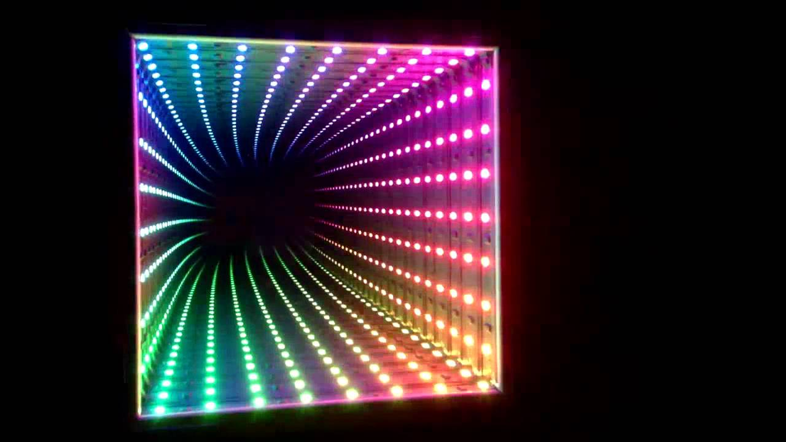
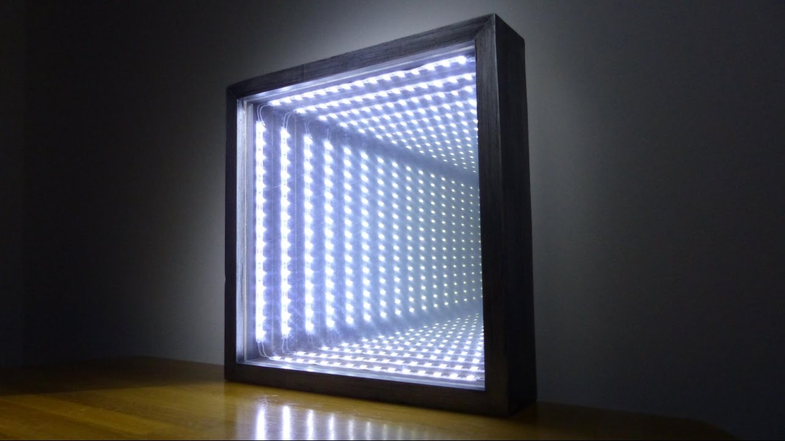
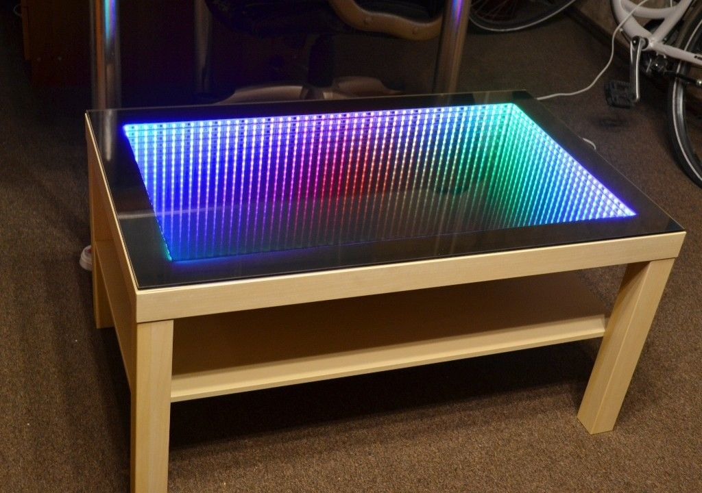
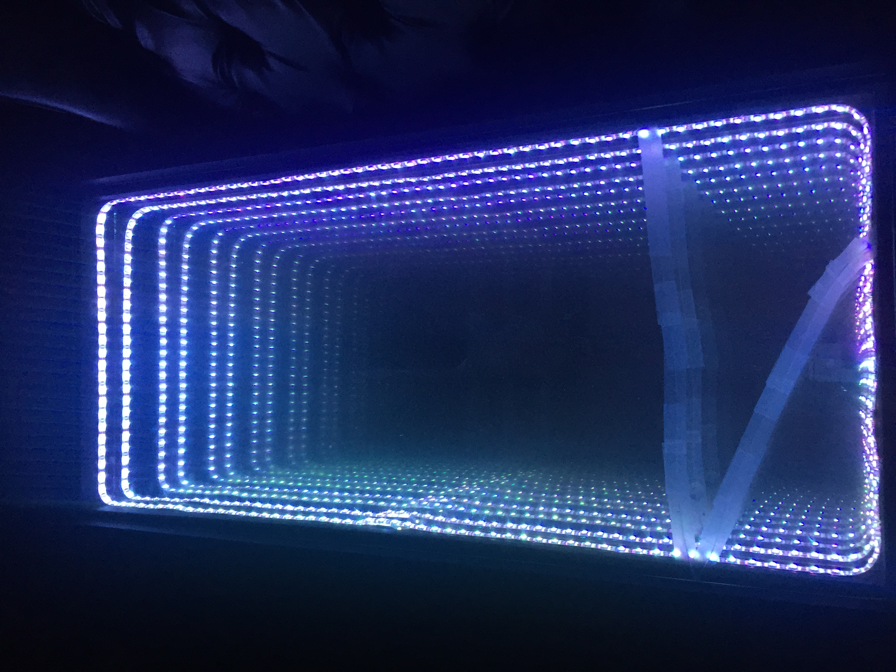
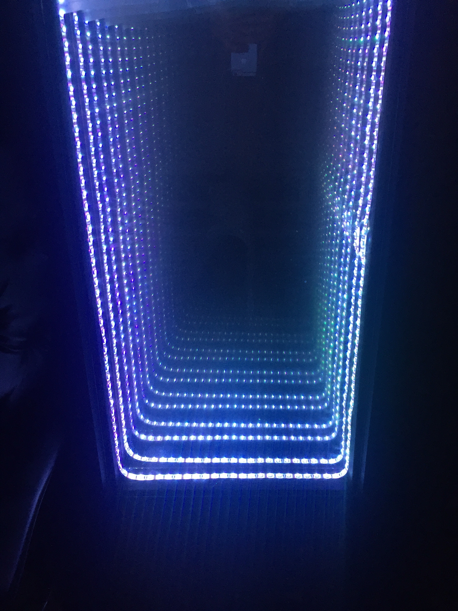

Story
We began the project by doing research and looking for inspiration. A simple google search of ‘infinity mirror’ will yield some pretty beautiful displays of craftsmanship ranging in size from desk ornaments to entire living room tables made of the infinite electroluminescent displays. We set our targets on something that could be a wall mounted decoration piece that would last beyond the duration of the course (and to this day I have our final creation hanging in my home).
However, through our research we found that at the time, nobody else had created (or at least shared) information on building a sound reactive experience like we envisioned. We would have to take aspects of other sound reactive LED projects and tailor them to fit our design.
  Some cool pictures of inspiration projects found online.
The next step was to outline the human affordances our project would need in terms of control and input. The simplest solution would be to have an aux cable plug right into the analog input of the microcontroller, process the audio data with a Fast Fourier Transform (FFT) algorithm, and light up the display in sync. However, this drastically limited usability of the device, and didn’t allow for users to actually hear the music the mirror was reacting to.
So, we considered adding an aux output for the device. This would allow a user to plug their phone into the system, have the audio processed for display in a relatively lossless manner, and then allow for the same audio stream to be output to speakers that the user could plug in. Not a bad solution and in fact one of the features that was implemented in the final design.
However, when considering the situations that a user may actually want to show off this device, we knew we could do better. For instance, what if the room the mirror was featured in had a better or more convenient speaker system than whatever could be plugged into the aux output? What if the location of the mounted display was just inconveniently positioned to always deal with plugging wires in and out? The solution we reached was that the system should have a microphone input. Such an implementation would allow for the device to be more versatile and be placed into any space the user envisioned without restrictions based on input and output accessibility.
It took a lot of time to calibrate correctly, but through repeated testing we were able to implement a working microphone input. The other fun side of this input was that it would respond not just to music from a speaker, but actually any noise in the room such as voices or live instruments.
But we still weren’t done!
With a magical mirror box filled with LEDs, we envisioned that it would be cool to control the lights themselves, separate from sound. The simplest way to achieve this would be to give a user access to three controls, each adjusting the value of Red, Green, or Blue light in the LED array.
At first, we imagined a physical interface with three dials would be a good solution to controlling the colors, but as we began to analyze the system, we realized there would also need to be a way to switch between the different modes of input (aux, microphone, and manual RGB control). We could make a box with a lot of switches, knobs, and labels, but it just began to become more and more complicated to wire the hardware and also seemed like a rather clumsy user experience to have to get up and walk over to the mirror every time you wanted to make a color or input adjustment. So, we explored the possibility of implementing a simple Bluetooth module so we could control the system from a phone. Thus, the phone app idea was born.
It took weeks of trial and error to get the system working correctly. This process included frying circuits at 3AM and accidentally cracking the custom glass pane after an all-nighter getting the code to work (yes tears were shed). We meticulously calibrated the microphone potentiometer, I coded my first iOS app and learned how to initiate Bluetooth communication, and we performed basic user testing with some friends (often to the tune of “Wow this is so cool!”). But we eventually created something we could be proud of and even managed to impress our professor with it!
A temporary repair to the cracked glass. Yes, it was eventually replaced!
Takeaways
Overall, this was a really fun project to work on and while some seasoned engineers might view our creation as simple, it was a milestone accomplishment of learning in my early design career and a project I can say I was truly passionate about bringing to life from the moment ideation began.
Future Work
Since the time of the project, the iOS app I originally built has long since become outdated and unusable, but I wanted to keep this project alive and on display. I recently rebuilt the entire circuit and codebase from scratch using an Arduino Uno microcontroller and eliminated some of the features that went unused (aux cable input and output) for simplicity and decoupled the design from the app dependence so that future iterations of the code would not need to be updated every time Apple released a new OS. If I do say so myself, it looks better than ever and is hanging up in my apartment as a spectacular decoration of engineering and light.
